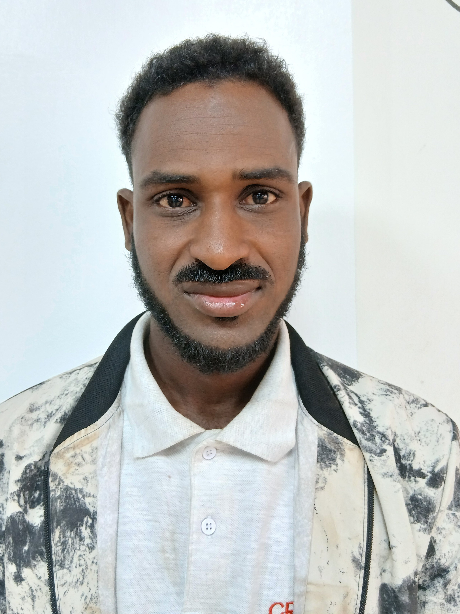

Aliou DICKO

CONTACTS
+223 76 04 95 39
alpha93@gmail.com
COMPETANCES
- Administration Windows Server 2022 & 2024 (GPO, ADDS, DHCP, Utilisateurs, Disques)
- Installation, configuration et administration réseaux Administration Mikrotik, Cisco
- Nagios, PRTG
- WordPress, HTML, CSS, Java
- Bases de données Postgresql et MySQL
- Power BI, Excel avancé, Stata et Kobotoolbox
- Figma, canva
- Versonning (Git, Github)
- Outils collaboratifs
- Gestion de projets
LANGUES
- Français : Courant
- Fulfuldé : Courant
- Moré : Courant
- Anglais : intermediaire
PROFIL
Ingénieur de Travaux en Réseaux et Systèmes Informatiques, spécialisé en déploiement , administration et maintenance d’infrastructures. Outre, je suis Data Analyst (Power BI, Excel, statistiques)et developpeur WordPress. Actuellement en formation developpement Fullstack chez Orange Digital Center.
EXPERIENCES
2025
Webmaster (WordPress)
Laafi Faraj
- developpementsite vitrine, administration et maintenant
- Mise en place strategie de communication digitale
- Realisations de spots publicitaires
2024
dministrateur Réseau
IT Projet
- Administration, et maintenance réseau
- Optimisation grâce aux liaisons BLR, FH et FO
- Supervion reseau et securisation d'équipements (switchs, AP, Routeurs)
2023
Stagiaire Réseau et maintenance
Meteo Burkina
- Deploiement et maintenance reseau
- Initiation aux serveurs de donnees climatiques
Education
Institut Superieur de Technologies
Licence en Reseaux et Systèmes Informatiques